Making a game with HelaEngine
Start with an empty field. Finish with something a player can download and run. Every step below was carried out in the editor to take the screenshot beside it, in the order it is written.
Chapters 1–6 are worth doing in order — they are the twenty minutes that make everything after them make sense. After that, jump wherever you like. Each chapter says what it needs from earlier ones.
Where a control lives is written like this: Rendering › Water › Surface height — panel, then section, then the field itself.
1What you need
A computer that can run a modern browser, and about ten minutes. There is no account, no install, and nothing to configure. Your work is saved in the browser on your own machine until you choose to do something else with it.
| You want to | You need |
|---|---|
| Build and play in the editor | Chrome, Edge or Firefox, reasonably current. A graphics card helps but is not required. |
| Run the portable build | Node.js, and nothing else. No git, no package manager, no install step. |
| Export a game and host it | Anywhere that serves static files — GitHub Pages, Netlify, a folder on a web server. |
Ship a Windows .exe |
The desktop packaging step, which downloads a runtime the first time. See chapter 23. |
HelaEngine does not generate a game from a description, and nothing in it asks a language model anything at runtime. It is an editor that produces a document, and an engine that runs that document — the same engine in the preview and in every export. That is why what you see while building is what a player gets.
2Open the editor
However you are running it — the portable build's START.bat, a
development server, or a hosted copy — you arrive at the same screen.
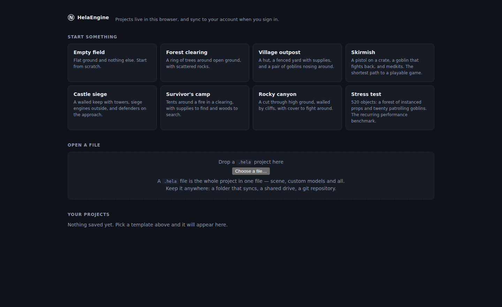
-
Pick a template. Forest clearing is the one this guide uses: a ring of trees around open ground, with some rocks and a sculpted rise on one side. Empty field gives you flat ground and nothing else.
-
Wait for the models. A few seconds the first time, while the browser fetches them. They are cached afterwards.
-
Take the tour, or skip it. Five short cards point at the panels. It appears once; Skip tour makes it go away for good.
In this browser, on this machine, in IndexedDB. Nothing is uploaded. That means a
different browser is a different set of projects, and clearing site data clears them
— so when a project starts to matter, use
Save to file… in the top bar, which writes a
.hela file you can keep, copy and reopen anywhere.
3The three columns
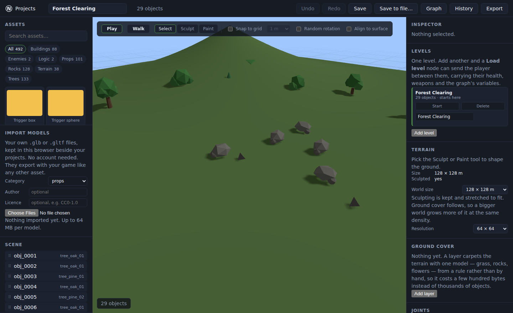
| Where | What is there |
|---|---|
| Top bar | Project name, object count, Undo / Redo, Save, Save to file…, Graph, History and Export. |
| Left |
Assets — everything you can place, filtered by category.
Import models — your own .glb files.
Scene — a tree of what is in the level.
|
| Centre | The viewport, with the tool switch across the top: Play, Walk, Select, Sculpt, Paint. |
| Right | Inspector for whatever is selected, then the panels that belong to the level as a whole — Levels, Terrain, Ground cover, Joints, Rendering, Game, Weapons, Secrets, Audio, Player and the rest. |
The right column is long, and deliberately so: it is one scrolling list rather than a set of tabs, so you can see the light, the ground cover and the water without hunting for them. Scroll it.
4Moving the camera
Learn these four and everything else gets easier.
| To | Do |
|---|---|
| Orbit | Drag with the left mouse button on empty space |
| Pan | Drag with the middle button, or Shift and drag |
| Zoom | Scroll wheel |
| Walk around at eye height | The Walk tool, then WASD and the mouse |
Walk moves your view through the level with nothing else running. Play starts the actual game — physics, enemies, weapons, the graph. Use Walk to judge how a place feels to stand in; use Play to find out whether it works.
5Placing things
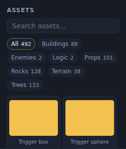
-
Find something. Type in Search assets… or press a category — Buildings, Enemies, Logic, Props, Rocks, Terrain, Trees.
-
Drag its card into the viewport. It lands where you drop it, standing on the ground.
-
Place a few more. The toolbar options above the viewport change how they land: Snap to grid with a size, Random rotation so a row of trees is not a row of clones, and Align to surface to tilt each one to the slope it stands on.
For grass, undergrowth, scattered rocks — anything you would place dozens of — use ground cover instead. It is a rule rather than a list, costs a few hundred bytes rather than thousands of entries, and you can change your mind about all of it at once.
6Move, rotate, scale
Click a thing in the viewport, or a row in the Scene tree. A gizmo appears on it and the Inspector fills in.
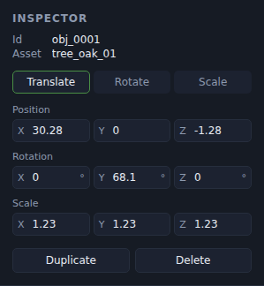
| Key | Does |
|---|---|
| W E R | Move, rotate, scale |
| Delete | Remove the selection |
| Ctrl+D | Duplicate |
| Ctrl+Z / Ctrl+Y | Undo, redo |
| Drag on empty space | Marquee-select several at once |
Press ? at any time for the full list. Dragging one row onto another in the Scene tree makes it a child, so moving the parent moves both — useful for a door in a wall, or a lamp on a post.
7Sculpting the ground
Terrain is a height field: one height per point on a grid. You paint that height with a brush, and everything else — where water shows, where grass will grow, what the player can climb — follows from it.
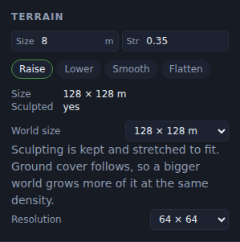
-
Press Sculpt in the toolbar above the viewport.
-
Choose a brush. Raise and Lower push the ground up and down. Smooth takes the lumps out of what you just did. Flatten pulls everything under the brush toward one height — the way to make somewhere to put a building.
-
Set radius and strength, then drag on the ground. Hold and move for a ridge; click repeatedly in one place for a peak.
-
Smooth afterwards. Raise leaves the edges of the brush visible. One pass of Smooth at a larger radius turns a lumpy mound into a hill.
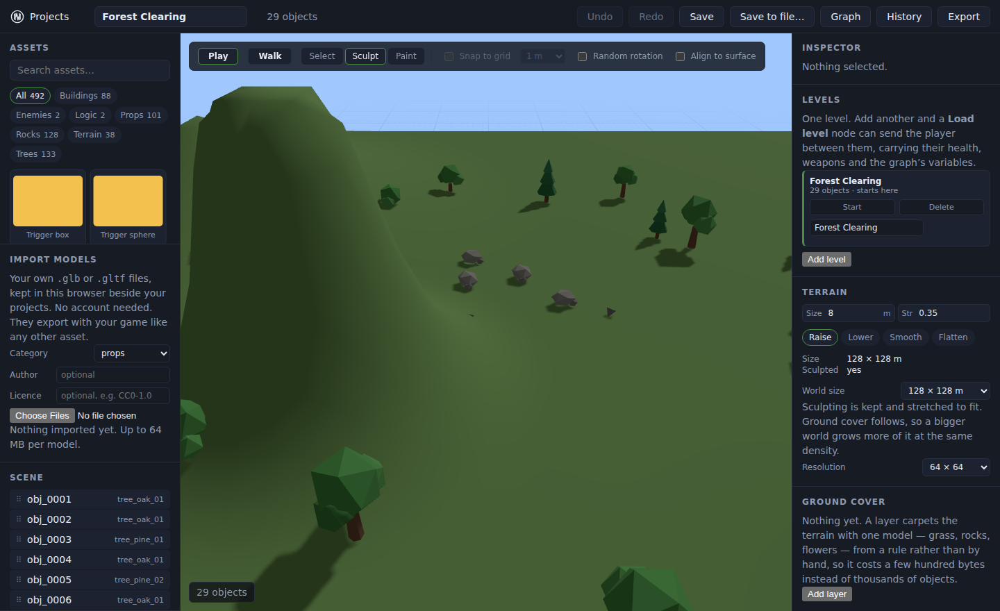
World size and resolution
Terrain › World size changes how many metres across the level is. Sculpting is kept and stretched to fit, and ground cover follows, so a bigger world grows more grass at the same density rather than the same grass spread thinner.
Terrain › Resolution is how fine the height grid is. Higher means you can sculpt smaller details, and costs more to draw. 64 × 64 is the default and is enough for hills and valleys; raise it when you want paths and ditches.
Raise ground under a building and the building ends up inside the hill. Place the landscape first, then the things that stand on it — or use Flatten to make a level pad before you build.
8Painting the ground
Four layers — grass, rock, sand, whatever you set them to — blended per point. Painting is how a path, a beach or a bare hilltop happens.
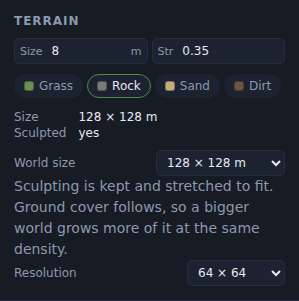
-
Press Paint.
Pick which of the four layers you are painting, and set its colour.
-
Set radius and strength, and drag. Layers blend rather than replacing each other, so the edges are soft.
Ground cover can be restricted to one painted layer. Paint sand across a strip and the grass retreats from it, with no second mask to keep in step — the brush is the only thing you touch.
9Adding water
Water is a level surface at a height, and the ground decides where it shows. Sculpt a hollow and it fills; raise a bank and the water stops at it. You never draw the outline of a lake — you dig one.
-
Scroll the right column to Rendering, find Water, and tick This level has water.
-
Pick a kind. Pond is small, still and clear enough to see the bottom. Lake is wider with slower waves. Sea has long swells and you cannot see a metre down. Each one sets the sliders below it to something sensible.
-
Set the surface height. This is the one number that matters. Ground above it is dry land; ground below it is underwater.
-
Adjust clarity and waves if you want to. Clarity is how far down you can see, and it is the strongest cue that water has depth at all.
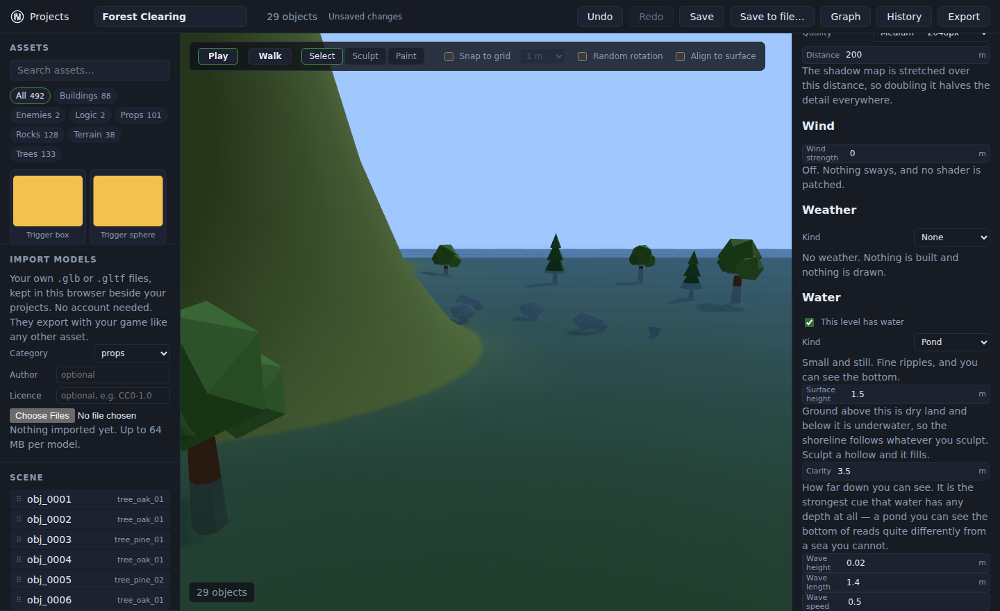
Making it swimmable
Tick Things float and the player swims. Objects are then lifted by how deep they are, and the player swims once they are chest-deep — knee-deep is still walking, which is what you want at a ford.
- Buoyancy is a multiple of an object's own weight. 1 hangs still wherever it is left, below that it sinks, above it floats. A stone is about 0.4.
- Drag is how much the water slows things. At zero a crate dropped in bobs forever.
Leave it off and the surface is scenery: a moat the player never enters draws exactly the same and costs nothing in the physics.
The panel will tell you. A surface below every piece of ground in the level is invisible — the commonest mistake, and it reads like a broken feature. Raise the height, or sculpt a hollow for it to sit in.
A river running downhill. The surface is level by definition, so a sloped or flowing one is a different feature rather than a setting. There is also no mirror reflection — the surface takes a tint of the sky at glancing angles instead, which reads as reflectivity and costs a fraction of a second render of the whole scene.
10Growing grass
A field of grass is tens of thousands of blades. You do not place them — you write the rule that puts them there, and the engine grows it the same way every time, in the editor and in the export.
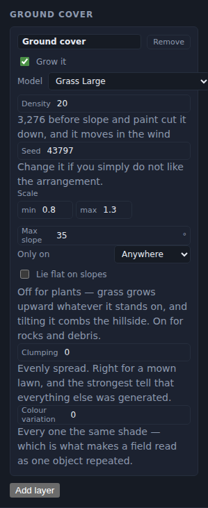
-
Scroll to Ground cover and press Add layer.
-
Pick a model. Grass Large is the obvious start; rocks, flowers and shrubs work the same way.
-
Set the density. It is per 100 m², and the panel tells you the real number of instances underneath.
-
Restrict where it grows. Max slope keeps it off cliffs. Only on ties it to a painted layer. Both stop a field looking sprayed on.
-
Turn up Clumping. At zero the field is perfectly even, which is right for a mown lawn and is the single strongest tell that everything else was generated. Real ground is patchy. Patch size is how wide a thick part is, in metres.
-
Turn up Colour variation. A field where every blade is the same green reads as one object repeated, because it is. A little goes a long way.
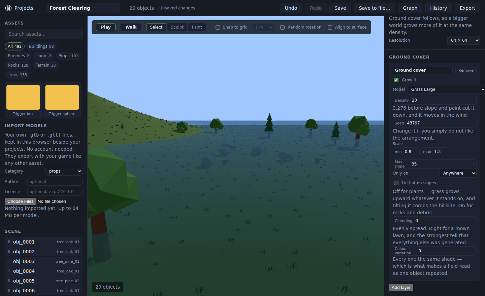
Change the Seed. Any number gives a different field; the same number always gives the same one. That is why the level looks identical on your machine, in the export and on a teammate's — the positions are never written down, only the rule that produces them.
11Light, weather and wind
Start with a look
The buttons at the top of Rendering write a whole set of settings at once. Nothing remembers which one you pressed — every field stays yours to edit and to undo, so a preset is a starting point rather than a mode.
Then the parts that matter most
| Setting | What it changes |
|---|---|
| Sun elevation | Time of day. Low sun, long shadows, and the single biggest lever on mood. |
| Sun direction | Which way those shadows fall. |
| Sky and ground fill | Tints upward faces with the sky and downward faces with the ground. At low-poly densities it does more for a scene than any amount of shadow tuning. |
| Shadow quality | Off is fastest and flat. Higher is sharper and costs more. |
| Weather | Rain or snow, with an intensity and a radius that follows the camera. |
| Wind | How far a two-metre plant leans at the top. At zero nothing sways and no shader is touched. |
| Image | Tone mapping and full-screen effects. With all of them off nothing is composed at all. |
Wind strength at zero is the absence of the system, not a wind blowing nothing — no material is patched and there is no per-frame work. The same is true of weather, water, image effects and ground cover. A level that does not use a feature does not pay for it.
Sound
The Audio panel carries an ambient bed and the effects the game plays. Ambience can follow the wind, so a gusty day sounds like one.
12Materials and surfaces
Select an object and open Material. You can override its colour, and how rough or metallic it is — the difference between damp stone and polished steel.
Surfaces go further: brick, tile, plank, stone, plaster, concrete and metal are generated rather than downloaded, at a scale you pick in words rather than numbers. There is nothing to fetch, so a surface costs no download and cannot go missing from an export.
Most low-poly models carry no texture coordinates, so the engine invents them by projecting from the object's own box. That works well until the object is scaled unevenly — stretch a crate into a wall and the bricks stretch with it. Scale it evenly, or use a model that brings its own coordinates.
13Your own models
Import models in the left column takes .glb and
.gltf files from your disk. No account, no upload — they are kept in
this browser beside your projects, and they travel with your game when you export,
exactly like any built-in asset.
-
Choose a Category so it files itself in the library.
-
Fill in Author and Licence if the model came from somebody else. These end up in the export's credits file, which is the point.
-
Press Choose Files and pick one or more models. Up to 64 MB each.
-
The editor measures the bounding box and picks a sensible collider, then the model appears in the library like anything else.
Which means another browser, another machine, or cleared site data means they are
gone. Keep the original files, and use
Save to file… — a .hela file
carries your imported models inside it.
14Animating a character
A scene names states — idle, walk, run, attack, hit, die — and each
state points at a clip inside the model. That indirection is the whole idea: swap the
model for a different one and the game keeps working, because the game asked for
"attack" rather than for mixamo.com|Layer0.003.
-
Import a rigged model — any glTF or GLB with a skeleton and clips. Mixamo is the fastest way to get one, and it is free.
-
Select the object and tick Animate this object in the Animation panel.
-
Check the guesses. Each state's clip is guessed from its name —
Idle,Walking,Running,Punching,Hit ReactionandDeathall match — and every guess is a dropdown you can change. -
Give it a reason to move. Attach Chase on sight from the Behaviours panel and the AI drives the states for you: idle until it sees the player, then run, then attack.
A model with only idle and walk keeps walking when the AI
starts an attack, rather than snapping to a rest pose. Half-rigged models are the
normal case in a low-poly library, and continuing to move is the graceful failure.
Feet that meet the ground
Foot placement in the panel of the same name puts a character's ankles on the actual ground rather than on an imaginary flat plane, and drops the hips when one foot is lower than the other. It is what stops a character on a slope looking like it is skating.
15Physics
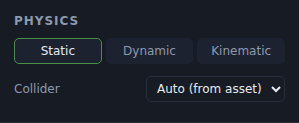
| Body | Means |
|---|---|
| Static | Never moves. Solid. The right answer for buildings, rocks and trees, and the cheapest. |
| Dynamic | Falls, is pushed, can be knocked over. Crates, barrels, anything the player should be able to disturb. |
| Kinematic | Moves because something told it to, and shoves aside anything in the way. Platforms, doors, lifts. |
The Collider is the shape used for collision, which is not the shape you see. Auto takes the manifest's choice, which is usually right. A box is fastest, a capsule is right for anything roughly upright, and a mesh collider is exact and expensive — worth it for a stair or an archway the player must pass through, wasteful for a boulder.
Assets marked none — grass, small decoration — are walked straight through, on purpose. If something you expect to be solid is not, check the collider before assuming physics is broken.
16Joints, breakables, ragdolls, vehicles
Joints
The Joints panel constrains two objects to each other: a hinge for a door or a lid, a slider for a drawer or a lift, a ball for a chain link, a fixed joint for things that should break apart together. Hinges and sliders have limits and a motor, so a door can be driven open rather than merely allowed to swing.
Breakables
Breakable gives an object health and something to become when it runs out. Damage arrives from weapons and from impacts — a crate dropped hard enough breaks itself. Breaking raises an event, so a door that shatters can open a path in the graph.
Ragdolls
Ragdoll makes a rigged character go limp when it dies, using eleven parts rather than every bone — enough to fall convincingly, few enough to stay fast. The binder guesses which bone is which from its name, and shows you what it picked.
Vehicles
Vehicle turns an object into a raycast car the player can drive: engine force, brakes, steering angle, suspension and grip. The player's own capsule is switched off while they are inside it, because a character standing in the middle of a car is a character the solver spends the whole journey trying to push out.
A joint between an object and itself, a hinge on something with no body, a breakable with no fragments — each is reported in the panel rather than silently doing nothing. Read the warnings; they are the difference between five minutes and an afternoon.
17The player
The Player panel is where the game stops being a diorama. Spawn point, height, walk and sprint speed, jump height, how steep a slope can be climbed, how tall a step can be walked up.
Three settings are worth understanding because they are what makes movement feel fair rather than precise:
- Coyote time — a jump still works for a moment after walking off an edge.
- Jump buffering — a jump pressed just before landing fires on landing instead of being dropped.
- Air control — how far you may steer after leaving the ground. 1 is full control, 0 commits you to the direction you jumped.
All three default to the behaviour that existed before them, so an old level plays identically until you change one.
Weapons, Game UI, Progress and Secrets build out from there: what the player carries, what they see, what counts as winning, and what is hidden until they find it.
18Behaviours and triggers
A behaviour is a bundle of movement or logic you attach to an object and configure with a form — patrol a route, chase on sight, spin, float, open as a door. They are real code inside the engine, not a script in your document, which is why they run identically in an export.
A trigger is a volume that notices things. Drop a Trigger box or Trigger sphere from the Logic category, size it, and say what it listens for — the player entering, an object leaving. It raises an event, and the graph decides what that event means.
Every behaviour and every one of its parameters is listed in the behaviour reference, which is generated from the engine's own definitions and therefore cannot disagree with them.
19The node graph
Graph in the top bar opens a canvas where you wire up what happens in the level. It is how a lever opens a gate, how collecting three keys ends the level, how a boss spawns when a room is entered — without writing code.
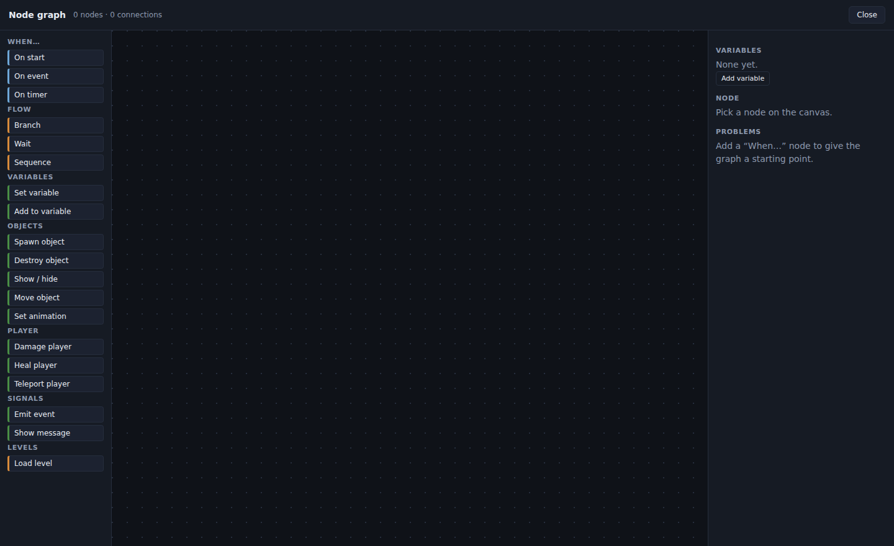
| Group | What it is |
|---|---|
| When… (blue) | Where a chain starts, and nothing connects into one. On start runs as the level loads, On event every time an event of that name is raised, On timer after N seconds. |
| Flow (amber) |
Branch picks between true and false,
Wait continues on a later frame, Sequence runs its outputs in
order.
|
| Actions (green) | Everything else — set a variable, spawn or destroy an object, show or hide it, move it, damage or heal the player, emit an event, show a message. |
-
Drag a start node onto the canvas — On event if a trigger is going to drive it.
-
Drag the action you want beneath it.
-
Wire them. Drag from the output dot to the input dot.
-
Read the problems list. A node wired to nothing, an event nothing raises, a loop with no wait in it — the canvas finds them before you play.
Because a document that could name a function to call would be a document that could run code nobody shipped — and levels get shared. The graph is a closed vocabulary: the engine knows every node that exists, so a level from a stranger cannot do anything the engine did not already contain.
20More than one level
The Levels panel adds levels to a project and marks which one starts. A Load level node in the graph sends the player between them, carrying their health, weapons and the graph's variables across — so a key found in level one is still in hand in level two.
Each level has its own terrain, objects, ground cover, water and lighting. They share the asset library and the player.
21Playing and testing
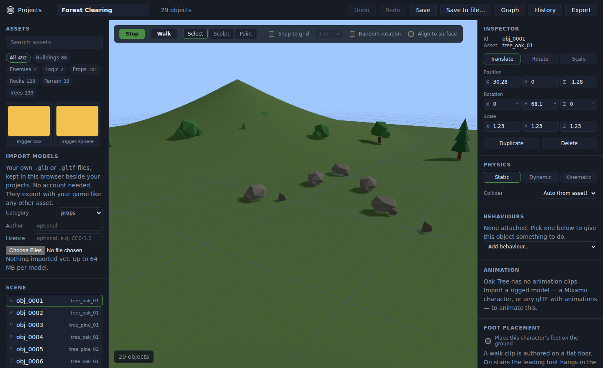
-
Press Play. Physics starts, behaviours run, the graph fires, weapons work.
-
WASD to move, mouse to look, Shift to sprint, Space to jump, C to crouch, click to fire, R to reload, V to change camera.
-
Esc stops and puts you back where you were.
Play From Here
Testing the far corner of a level by walking to it every time is how a level stops getting tested. Play From Here starts the game at the spot you are looking at instead of at the spawn point. Eject hands control back to the editor camera without stopping the simulation, so you can watch an enemy patrol from above while it is still running.
The viewport shows you the document. Play shows you the game. A setting that looks right in the panel and does nothing in Play is the failure worth catching, and it is the only one that matters to a player.
22Exporting to the web
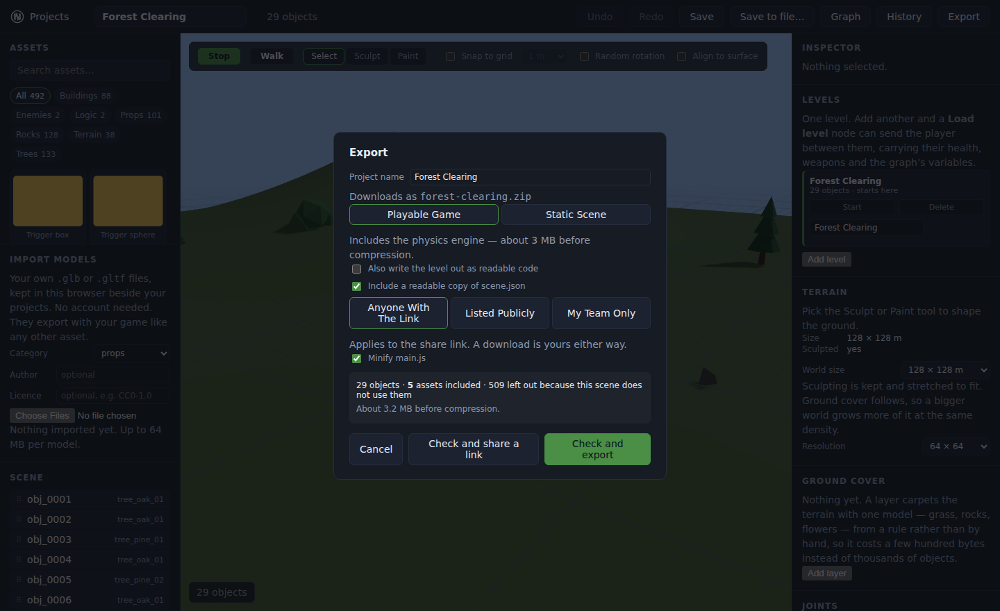
Export gives you a zip containing index.html, the engine,
your assets, scene.json and a credits file. It is an ordinary static site:
no build step, no server code, no dependency to install.
-
Press Export and choose a mode. Game includes physics and gameplay; Static is a scene to look at and is much smaller.
Download the zip and unzip it.
-
Serve it. Opening
index.htmlfrom your file manager will not work — browsers refuse to fetch models overfile://and you get a black screen. From the folder, run any one of these:python3 -m http.server 8000 npx serve . php -S localhost:8000Then open
http://localhost:8000. -
Host it by uploading the same folder to GitHub Pages, Netlify, or any web server.
If something in the level would produce a build that does not run — a spawn point off the edge of the terrain, a model that is not there — you are told which object and why, rather than being handed a broken zip. That is the check doing its job.
23Shipping a Windows .exe
An export can be wrapped in a desktop shell so players double-click a program instead of finding a web host. The packaging step takes a folder that has already been exported — it never rebuilds it, so it cannot introduce a broken game, only fail loudly to produce a build.
- It is big. Around 270 MB unpacked, because the browser engine that draws your game ships inside it. Your game is a few megabytes of that.
- Windows will warn on first run. "Windows protected your PC" is SmartScreen, and it says that about any program that has not been signed with a paid-for certificate. Players click More info then Run anyway. The README beside the executable says so.
-
There is no macOS build. A
.appthat will not open without Apple notarisation is worse than no.app, so the option does not exist rather than failing later.
See the desktop export guide for the full walkthrough.
24When something looks wrong
| What you see | What it usually is |
|---|---|
| The exported game is a blank page |
It is being opened from file://. Serve it — see chapter 22.
|
| Everything is a grey box | The models did not load. Check the asset folder came across with the rest of the export. |
| Nothing happens when you press Walk | The viewport has not got keyboard focus. Click in it once. |
| Your project list says nothing is saved | A different browser or profile, or site data was cleared. Projects live in the browser until you Save to file…. |
| Imported models are not in the library |
Check the category filter, and check the file is .glb or
.gltf under 64 MB.
|
| The editor is slow with a big scene | Turn on a draw distance, lower shadow quality, and check whether ground cover density is higher than it needs to be. |
| A setting saves but changes nothing | Test it in Play, not the viewport — and if it still does nothing, that is a bug worth reporting rather than something you are doing wrong. |
Longer answers, including how to get at the actual error, are in Troubleshooting.
25Where to go next
This guide walks the path once. These go deep on one thing each.
The screenshots on this page were captured by carrying out the steps beside them in the editor. If the interface has moved on and a picture no longer matches, the picture is wrong — trust the editor.